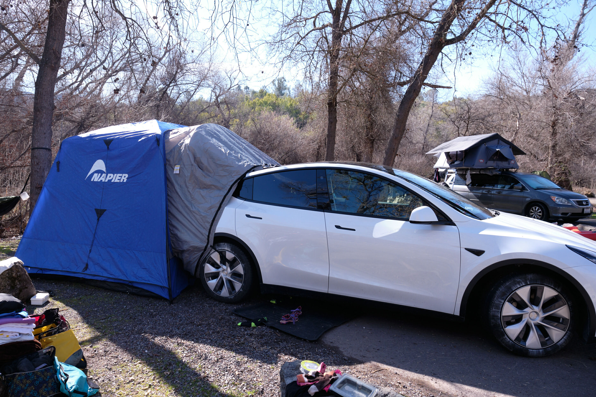
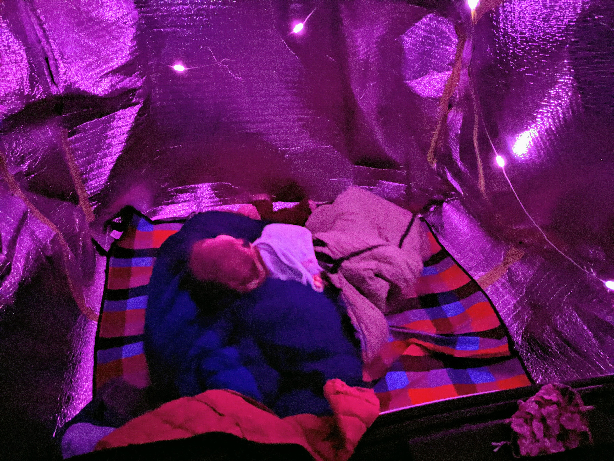
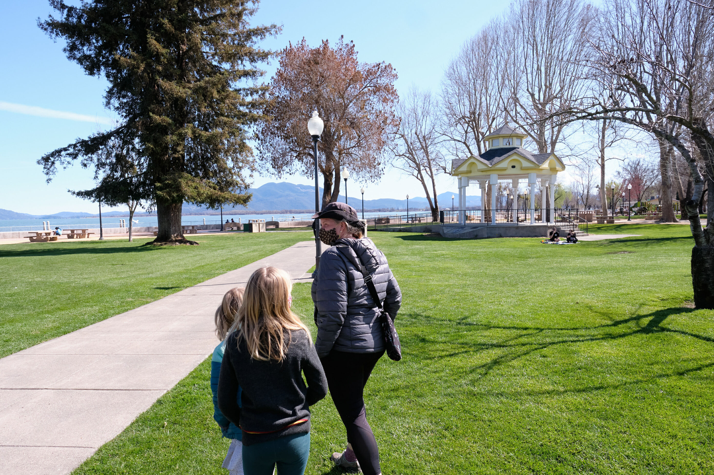
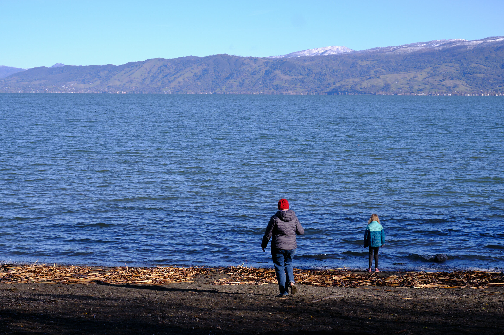

Tesla Model Y: below-zero family camping
TL;DR: If you think outside of the box, you can sleep 4 with full climate control for a cost of 10-12% battery usage per night, even in freezing temperatures.
When we bought our Tesla Model Y in December, the intent was to roughly recreate the experiences of our trusty 1971 VW Bus, but in electric form.
With all the cargo space, and the availability of great mattress options, such as the Tesmat, one can get pretty close to a passenger-van conversion. What one cannot simulate easily however, is the 4-person sleeping experience one can get from a pop-up tent. The Tesla Model Y can only comfortably fit 2 adults, or 1 adult & two children.
The best option I've found for sleeping 4 is the Napier SUV Sportz Tent This gargantuan tent attaches easily to the back of a Tesla Model Y, but it is a bit heavy and bulky to pack up. The biggest plus side to this option is that you can still run the Camp Mode on the Tesla Model Y to heat the tent: which is something we tested this weekend.

Using Camp Mode to climate control the Napier tent is a party trick that is mostly only useful in extreme temperatures. In my experience, Camp Mode on the Tesla Model Y consumes ~10% battery life when set to 67'F with a 40'F exterior temperature, and the trunk closed.
My primary concern was power consumption due to the lack of insulation: tents are typically nowhere near as insulated as a Tesla. How much power would we waste by adding the tent?
To counter the insulation issue, I ordered 3mm 48"x50Ft, and a single roll of foil tape, to build a ~5'x5'x5' cube within the Napier SUV Tent, lovingly called the "space station":

The foil tape ran out quite quickly, so I finished it up with some painters tape.
On the first night of testing, we arrived at 10pm with 68% battery, raining cats & dogs, and a chilly 35'F. I was too busy trying to setup without getting soaked that I didn't bother sealing the gaps too much.
I set the Tesla to Camp Mode @ 67'F, and used a screwdriver to flip the trunk latch to trick the car into thinking the trunk was shut. I had heard that otherwise, the climate control would shut off after 30 minutes. Our battery went from 67% to 47%: a 20% drop over 10 hours, which had me a bit worried for the second night.

By this point, we had acquired 2 extra rolls of foil tape (still not enough), and used some duct-tape to seal the gaps between the car and the space station. I was more conservative this time, setting the car to 60'F, setting the vent manually to 1. After 7 hours, we consumed only 5% battery, so I increased the heat to 66'F for the next 4 hours, which consumed another 5%. Not bad when the exterior temperature was 30'F!
One recommendation is a stuff sack, as packing the inner tent can consume a lot of space in the car otherwise (a little bit bigger than the packed size of the Napier SUV tent). Here's a photo of the inner tent before I rolled it up:

When we left the campsite, we were at 33% battery, which was just enough to get us to the supercharger in Ukiah. My backup plan was a slow charger just up the road in Lakeport, which I still tried for fun.

This experiment means that the insulated Napier tent is effectively as efficient insulation wise as the Tesla itself: at worst, 10-20% more power consumption over the regular Camp Mode with the trunk shut. Depending on your target temperature, plan on 10-12% battery consumption per night (11 hours) with Camp Mode in the Tesla Model Y.

This result means that the Tesla Y can sleep 4 people in freezing temperatures for multiple nights in a row without a source of electricity. I still have a few gaps to fill with foil tape, and need to bring painters tape on the next trip to quickly seal it against the car.
Hope this post helps someone!